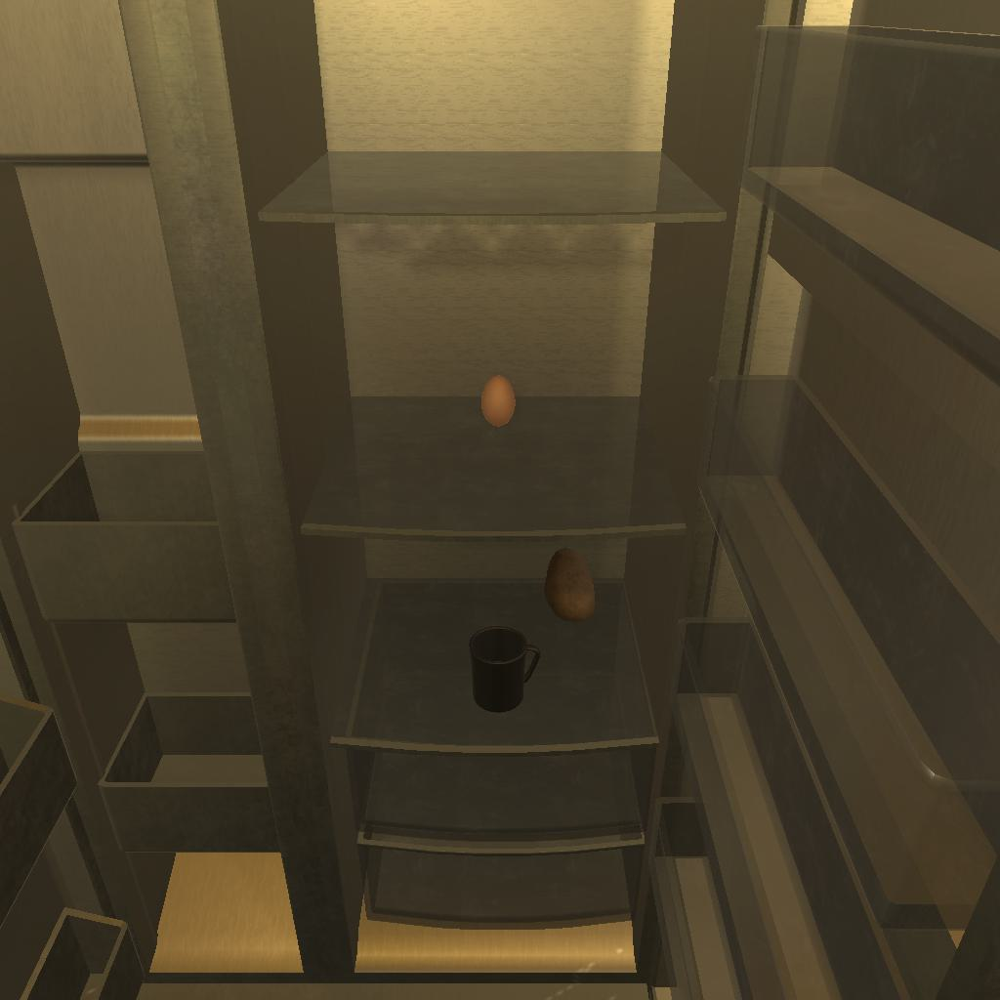

---------------------------------------------------------task: 29---------------------------------------------------------
--------------------------------------------------------------------------------------------------------------------------------------------------------------------
--------------------------------------------------------------------------------------------------------------------------------------------------------------------
Step:--------------------------------------------------------------------------14-------------------------------------------------------------------------------
----------------------------------------
VLM Prompt:
Image1:
Image2:
**Instruction**
1. Analyze the provided images to identify all visible household objects and compare the difference between images (e.h. whether the object is opened or not and taken on hand or not), focusing on those relevant to the task description "find two tomato and put them in countertop."
2. Use the analysis of images and the task hint "The agent must find an object of the desired type, pick it up, find the correct location to place it, put it down there, then look for another object of the desired type, pick it up, return to previous location, and put it down there with the other object." to answer the question: what is the most reasonable action in the choices for the task description "find two tomato and put them in countertop"?
3. Decide and write the answer using the template: The answer is: (i): , where i is the real number. If there is no desired object in images, search every place based on **Initial Observation** to find the object. And if no one is exactly correct, choose a similar answer.
**Initial Observation**
You are in the middle of a room. Looking quickly around you, you can see cabinet (1-20), toaster (1), microwave (1), garbagecan (1), countertop (1-2), drawer (1-4), stoveburner (1-4), sinkbasin (1), sink (1), fridge (1), diningtable (1), coffeemachine (1)
**Answer Choices**
(1): go to cabinet 1
(2): go to cabinet 2
(3): go to cabinet 3
(4): go to toaster 1
(5): go to cabinet 4
(6): go to cabinet 5
(7): go to microwave 1
(8): go to garbagecan 1
(9): go to countertop 1
(10): go to drawer 1
(11): go to cabinet 6
(12): go to cabinet 7
(13): go to drawer 2
(14): go to stoveburner 1
(15): go to stoveburner 2
(16): go to countertop 2
(17): go to cabinet 8
(18): go to cabinet 9
(19): go to cabinet 10
(20): go to drawer 3
(21): go to drawer 4
(22): go to stoveburner 3
(23): go to stoveburner 4
(24): go to cabinet 11
(25): go to cabinet 12
(26): go to cabinet 13
(27): go to cabinet 14
(28): go to sinkbasin 1
(29): go to sink 1
(30): go to cabinet 15
(31): go to cabinet 16
(32): go to cabinet 17
(33): go to cabinet 18
(34): go to cabinet 19
(35): go to diningtable 1
(36): go to coffeemachine 1
(37): go to cabinet 20
(38): open fridge 1
(39): close fridge 1
(40): take mug 1 from fridge 1
(41): take potato 1 from fridge 1
(42): take egg 1 from fridge 1
(43): examine fridge 1
**Answer**
Let's think step by step by following the instructions.
----------------------------------------
----------------------------------------
Original Response:
First, we analyze the provided images for any visible household objects:
Image 1 shows a countertop with no objects on it.
Image 2 shows a shelf with various objects, including an egg, a potato, and a mug.
None of the images show a tomato, which is the object needed for the task "find two tomatoes and put them on the countertop."
Based on the initial observation, there are several cabinets, drawers, and a fridge that have not been searched yet. Since tomatoes are not generally stored in toasters, microwaves, garbage cans, or on stove burners, we can eliminate those options.
Tomatoes are typically stored in a fridge or sometimes in a cabinet or on a countertop if they are not to be kept cold. So the most reasonable actions to take would be to first search the fridge and then the cabinets if the tomatoes are not found in the fridge.
The answer is: (38): open fridge 1, to find the tomatoes. If they are not there, the next reasonable action would be to search the cabinets starting with cabinet 1.
----------------------------------------
----------------------------------------
>>> Refine Original VLM Response and Get Pure Action: open fridge 1, to find the tomatoes
----------------------------------------
-----------------------------------------------------------------
Running time: 23.76451325416565 seconds
Total Money: 15.334650000000003
-----------------------------------------------------------------
-----------------------------------------------------------------
Text Observation:Nothing happens.
-----------------------------------------------------------------
UNSUCCEED